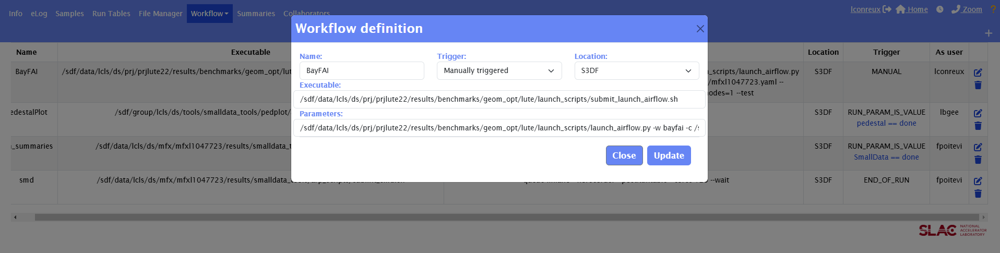
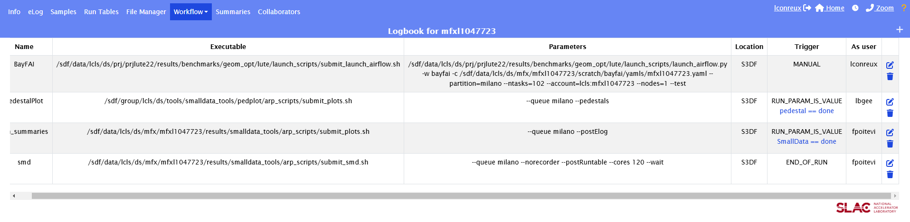
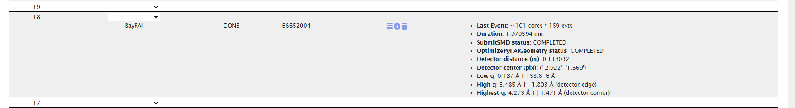
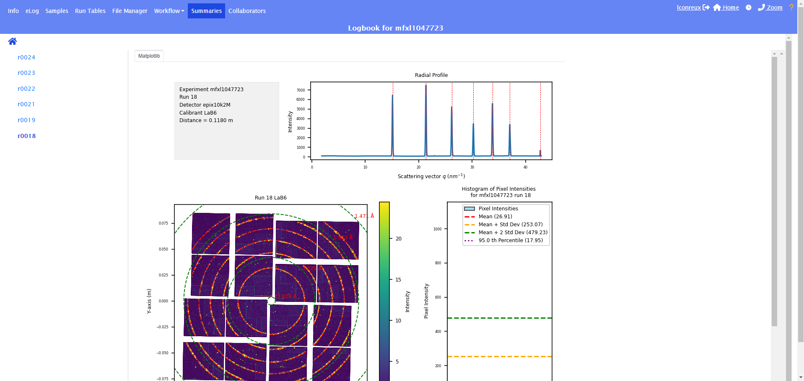

BayFAI User Documentation
Jump to:
- BayFAI Configuration
- Running BayFAI from the Command-Line
- Running BayFAI from the eLog
- Running only BayFAI Geometry Calibration
BayFAI Configuration
Preliminaries lute
BayFAI is run within the newer version of btx, lute standing for LCLS Unified Task Executor. This next iteration of btx is still in development.
Due to its recent implement, BayFAI has not yet been merged in the main branch of lute.
A stable and up to date version with BayFAI can be found at /sdf/data/lcls/ds/prj/prjlute22/results/benchmarks/lute.
Preliminaries smalldata
BayFAI needs a powder image to perform the calibration. smalldata does it for us.
A stable and up to date version working with BayFAI can be found at /sdf/data/lcls/ds/prj/prjlute22/results/benchmarks/smalldata_tools.
Experiment Configuration
Each experiment requires a customized YAML configuration file.
-
Navigate to the experiment scratch folder and create a working directory:
bash (base) [lconreux@sdfiana002 ~] cd /sdf/data/lcls/ds/<hutch>/<experiment>/scratch/ (base) [lconreux@sdfiana002 scratch] mkdir bayfai -
Navigate to the lute working directory and create useful subfolders:
bash (base) [lconreux@sdfiana002 scratch] cd bayfai (base) [lconreux@sdfiana002 bayfai] mkdir yamls (base) [lconreux@sdfiana002 bayfai] mkdir launchpad (base) [lconreux@sdfiana002 bayfai] mkdir smd_output -
Fetch a config yaml: A template config yaml can be found at :
/sdf/data/lcls/ds/prj/prjlute22/results/benchmarks/yamls/config.yaml. Copy this config yaml to the scratch folder with appropriate experiment tag:bash (base) [lconreux@sdfiana002 bayfai] cp /sdf/data/lcls/ds/prj/prjlute22/results/benchmarks/yamls/config.yaml yamls/<experiment>.yamlAt this point, the working directory should look like this:bash (base) [lconreux@sdfiana002 bayfai]$ tree . ├── launchpad ├── smd_output └── yamls └── <experiment>.yaml -
Fill in the blanks in the config yaml: A template config yaml has been created but the user needs to fill in some important information.
bash (base) [lconreux@sdfiana002 bayfai] nano yamls/<experiment>.yamlHere what the template config file looks like: ```bash date: 2023/10/25 lute_version: 0.1 experiment:# If launch from eLog, erase that line run: # If launch from eLog, erase that line task_timeout: 1200 title: LUTE Task Configuration work_dir: /sdf/data/lcls/ds/ / /scratch/bayfai/ # Fill this line --- OptimizePyFAIGeometry: bo_params: bounds: dist: # Fill this line with guessed detector distance poni1: - -0.01 - 0.01 poni2: - -0.01 - 0.01 res: 0.0002
calibrant:# Fill this line with calibrant name (AgBh, LaB6...) det_type: # Fill this line with detector name (epix10k2M, jungfrau4M, Rayonix...) SubmitSMD: detSumAlgos: Rayonix: - calib_skipFirst_thresADU1 - calib_skipFirst_max all: - calib - calib_dropped - calib_dropped_square - calib_thresADU1 epix10k2M: - calib_thresADU5 - calib_max jungfrau4M: - calib_thresADU5 - calib_max detnames: # Fill this line with detector name (epix10k2M, jungfrau4M, Rayonix...) directory: /sdf/data/lcls/ds/ / /scratch/bayfai/smd_output/ # Fill this line producer: /sdf/data/lcls/ds/prj/prjlute22/results/benchmarks/geom_opt/smalldata_tools/lcls1_producers/smd_producer.py # If no smalldata cloned in experiment folder, use this one! ... `` BayFAI's config template is divided into three parts, thelute_config: basic experiment configuration (top top of the yaml),OptimizePyFAIGeometry: BayFAI required parameters,SMDSubmit`: smalldata required parameterslute_config:- If launched from eLog, erase the experiment and run lines.
- Fill in the correct working directory
/sdf/data/lcls/ds/<hutch>/<experiment>/scratch/bayfai/.
OptimizePyFAIGeometry:- Fill in a guessed detector distance, BayFAI will scan around that distance in the following manner [guess-50mm; guess+50mm] with a step size of 1mm.
- Fill in the calibrant name, (usually AgBh or LaB6) (list of all calibrant available: ressources).
- Fill in the detector type name, as it is defined in the psana environment (epix10k2M, jungfrau4M, Rayonix, Epix10kaQuad...).
SubmitSMD:- Fill the output directory for smalldata.
- Don't touch the producer if no smalldata repo was cloned in your experiment (I'd recommend even to never touch it!).
Running BayFAI from the Command-Line
Skip this section if you are only interested in launching BayFAI from the eLog
After setting correctly the config yaml, one can launch BayFAI workflow from the command-line by calling the lute executor.
-
Navigate to the launchpad folder:
bash (base) [lconreux@sdfiana002 bayfai] cd launchpad -
Double-check if the distance, the calibrant, or the detector have been changed in between runs!
- Modify the config yaml accordingly!
bash (base) [lconreux@sdfiana002 launchpad] nano ../yamls/<experiment>.yaml
- Modify the config yaml accordingly!
-
Launch BayFAI workflow
bash (base) [lconreux@sdfiana002 launchpad] /sdf/data/lcls/ds/prj/prjlute22/results/benchmarks/geom_opt/lute/launch_scripts/submit_launch_airflow.sh /sdf/data/lcls/ds/prj/prjlute22/results/benchmarks/geom_opt/lute/launch_scripts/launch_airflow.py -w bayfai -c /sdf/data/lcls/ds/<hutch>/<experiment>/scratch/bayfai/yamls/<experiment>.yaml --partition=milano --ntasks=102 --account=lcls:<experiment> --nodes=1 --testThis will launch the BayFAI workflow using the config yaml one specified earlier, and will scan 101 distances around the provided. -
Monitor the Results (after a couple of minutes):
- Inside the launchpad folder, one will find the logs. If everything went smoothed, one should see Task Complete at the bottom of it along with the geometry!
- Inside the smd_output, one will find the powder computed thanks to
smalldata. - After task completion, a figs folder should be created. Inside of it, Fitting plots along with BayFAI metrics can be found.
- The corrected geometry files should created within the calibration folder of the experiment:
bash (base) [lconreux@sdfiana002 launchpad] cd /sdf/data/lcls/ds/<hutch>/<experiment>/calib/<group>/<source>/geometry/ (base) [lconreux@sdfiana002 geometry] ls -l -rw-rw-r--+ 1 lbgee ps-users 3267 Dec 9 15:28 0-end.data -rw-rw----+ 1 lconreux ps-users 2729 Dec 9 19:13 <run>-end.data -rw-rw-r--+ 1 lbgee ps-users 257 Dec 9 15:28 HISTORY -rw-rw----+ 1 lconreux ps-users 18365 Dec 9 19:13 r<run:0>4>.geom
At this point, the working directory should look like this:
bash (base) [lconreux@sdfiana002 bayfai]$ tree . ├── launchpad │ └── slurm-<job-id>.out ├── smd_output │ └── <experiment>_Run<run:0>4>.h5 ├── figs │ └── bayFAI_<experiment>_r<run:0>4>.png ├── lute.db └── yamls └── <experiment>.yaml
Running BayFAI from the eLog
- Go to the Workflow Definition Panel:
- Click on Add a Workflow
- Fill in the Workflow Definition informations:
- Name: BayFAI
- Trigger: Manually triggered
- Location: S3DF
- Executable: /sdf/data/lcls/ds/prj/prjlute22/results/benchmarks/geom_opt/lute/launch_scripts/submit_launch_airflow.sh
- Parameters: /sdf/data/lcls/ds/prj/prjlute22/results/benchmarks/geom_opt/lute/launch_scripts/launch_airflow.py -w bayfai -c /sdf/data/lcls/ds/
/ /scratch/bayfai/yamls/ .yaml --partition=milano --ntasks=102 --account=lcls: --nodes=1 --test
 |
|---|
| BayFAI workflow configuration from the eLog for mfxl1047723. |
At this point, this is what the Workflow Definition Panel should look like:
 |
|---|
| BayFAI workflow definition from the eLog for mfxl1047723. |
-
Double-check if the distance, the calibrant, or the detector have been changed in between runs!
- Modify the config yaml accordingly!
bash (base) [lconreux@sdfiana002 bayfai] nano yamls/<experiment>.yaml
- Modify the config yaml accordingly!
-
Go to the Workflow Control Panel:
- Trigger BayFAI for the desired run!
-
Monitor the Results (after a couple of minutes!):
- Geometry is posted to the eLog along with the Resolution range covered by the detector (beam center is defined relative to the center of the powder image (in pixels)).
- Fitting plots along with BayFAI metrics can be found in the "Summaries" page (go to Geometry_Fit > r0018 where 18 is the run number).
- The corrected geometry files should created within the calibration folder of the experiment:
bash (base) [lconreux@sdfiana002 bayfai] cd /sdf/data/lcls/ds/<hutch>/<experiment>/calib/<group>/<source>/geometry/ (base) [lconreux@sdfiana002 geometry] ls -l -rw-rw-r--+ 1 lbgee ps-users 3267 Dec 9 15:28 0-end.data -rw-rw----+ 1 lconreux ps-users 2729 Dec 9 19:13 <run>-end.data -rw-rw-r--+ 1 lbgee ps-users 257 Dec 9 15:28 HISTORY -rw-rw----+ 1 lconreux ps-users 18365 Dec 9 19:13 r<run:0>4>.geom
 |
|---|
| BayFAI reporting of geometry from LaB6 for mfxl1047723 run 18. |
 |
|---|
| BayFAI summary of geometry inferred from LaB6 for mfxl1047723 run 18. |
If you are interested, at this point, the working directory should look like this:
(base) [lconreux@sdfiana002 bayfai]$ tree
.
├── launchpad
├── smd_output
│ └── <experiment>_Run<run:0>4>.h5
├── figs
│ └── bayFAI_<experiment>_r<run:0>4>.png
├── lute.db
└── yamls
└── <experiment>.yaml
The powder image used is stored as h5 file inside smd_output, and the fitting summary seen on the eLog is stored under the figs folder.
Running only BayFAI Geometry Calibration
This is for advanced usage.
If one has already a powder image to be used for calibration, the smalldata step can be skipped to directly run the geometry calibration step.